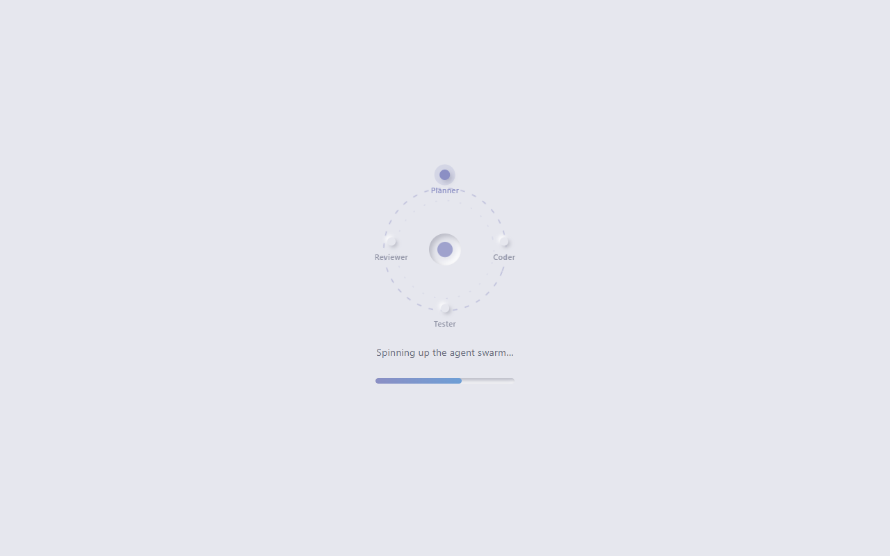
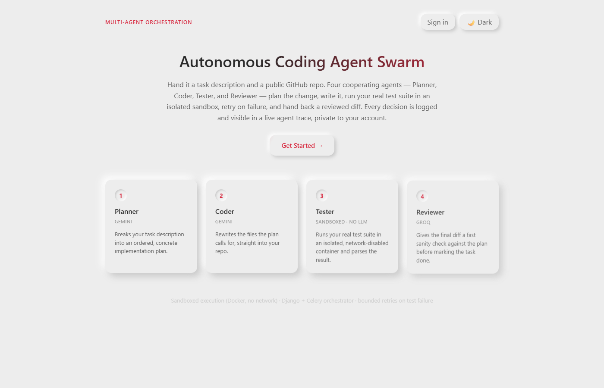
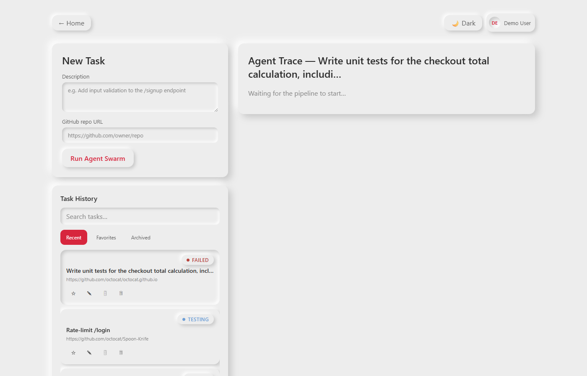

Agent Swarm automates a coding task the way a small engineering team would divide it up — except every "team member" is a specialized agent, and the whole exchange is logged. You give it a plain-English task description and the URL of a public GitHub repository. From there, four cooperating agents take over:
If the tests fail, the Coder gets another shot — with the actual failure output as context — up to a bounded number of retries, instead of looping forever or silently giving up. A React dashboard polls the backend and renders all of this as a live timeline (the Agent Trace), plus a diff viewer for exactly what the Coder changed.
This is a portfolio project built to demonstrate multi-agent orchestration end-to-end: a real Planner → Coder → Tester → Reviewer loop, backed by an async task pipeline, sandboxed execution, and observability by default — rather than a single LLM call dressed up as "agentic."
| Layer | Technology | Role |
|---|---|---|
| Backend / API | Django 5 + Django REST Framework | Task/AgentRun models, REST endpoints, free admin audit-trail UI |
| Async pipeline | Celery + Redis | Runs the Planner→Coder→Tester→Reviewer chain off the request thread; Redis is both the broker and result backend |
| Database | SQLite (dev) | Standard Django ORM only — no SQLite-only features — so it's a config change away from Postgres |
| Sandbox | Docker, via the docker Python SDK | One ephemeral, network-disabled container per Coder-write / Tester run |
| Planner LLM | Google Gemini (google-genai SDK) | Repo-wide reasoning and task decomposition into a step plan |
| Coder LLM | Google Gemini | Whole-file rewrites, given the plan + relevant file contents + prior test failures |
| Tester | pytest / npm test (no LLM) | Deterministic pass/fail inside the sandbox |
| Reviewer LLM | Groq (Llama 3.1 8B Instant) | Fast, bounded "does this diff match the plan" check |
| Frontend | React 18 + Vite | Task submission, live Agent Trace timeline, diff viewer |
| Diff rendering | react-diff-viewer-continued | Renders the Coder's before/after per file |
| Styling | Custom neumorphic CSS (light + dark) | Soft-UI theme driven entirely by CSS custom properties |
This is a deliberate design choice, not two APIs bolted on at random:
pytest exit code and output is strictly more trustworthy than asking a model to "judge" whether tests passed.
All provider calls go through one abstraction, agents/llm_client.py's
call_llm(provider, messages), so swapping which provider any agent uses is a
one-line change — not a rewrite. It also centralizes the free-tier handling both providers need:
exponential backoff with jitter on 429s, capped at 3 retries.
This combination gets a lot for free that a leaner stack would have to build by hand. The
Django admin doubles as a zero-extra-frontend audit trail for every Task and
AgentRun — genuinely useful for debugging a multi-step agent pipeline, not just a
scaffold artifact. Celery is the standard way to move a multi-minute, multi-API-call pipeline
off the HTTP request/response cycle, and Redis serving as both the broker and result backend
keeps the infrastructure to a single extra service in dev.
Executing LLM-generated code is the one place in this project where isolation is non-negotiable.
Every Coder-written file is exercised inside a throwaway container with network_disabled=True,
a memory cap, and an enforced timeout — the generated code cannot reach the network, exhaust the
host, or hang the pipeline. A plain subprocess call would not give any of those guarantees.
The Coder agent outputs strict JSON — {"files": [{"path", "content"}]} — with the
complete new content of each file it touches, rather than a unified diff. LLM-generated unified
diffs are fragile to parse: a single off-by-one context line breaks git apply outright.
Whole-file rewrites are trivial to validate and apply safely (including a path-traversal check
before anything touches disk). A real git diff is then computed after the
files are written, so the Reviewer prompt and the frontend's diff viewer still see a proper diff —
the model just never has to produce one directly.
The dashboard's job is to make an asynchronous, multi-minute pipeline legible in real time. Plain polling (every 2–3 seconds) gets that job done with a fraction of the complexity of a WebSocket layer, and it's what actually shipped for v1 — Django Channels remains a clearly-scoped stretch goal rather than a requirement the demo depends on.
POST /api/tasks/ and enqueued as a Celery job.git diff is computed immediately after.pytest by default). Exit code and output are parsed — no model involved.MAX_TEST_RETRIES (default 3) attempts, before the task is marked failed.{"approved", "concerns"}.done. Every stage's full input/output — including the raw LLM response — is already sitting in the database.
Every agent invocation creates an AgentRun row before it calls the LLM or the
sandbox (status pending), and updates it afterward — success or exception — so a crashed
agent is always visible in the trace, never silently missing. Every stage's raw LLM response is
persisted to AgentRun.output, so a failure can be diagnosed from the database without
re-calling the API. All of this is visible two ways: the React dashboard's live Agent Trace, and the
Django admin (/admin/), which needed zero extra frontend work to become a full audit log.
| Model | Key fields |
|---|---|
| Task | description, github_url, status (pending → planning → coding → testing → review → done/failed) |
| AgentRun | task (FK), agent_type, provider, input_context, output, status, retry_count, duration_ms |
docker compose up -d
python:3.11-slim alone has no test runner, and the sandbox has no network access at run time to install one.
cd backend docker build -t agent-swarm-sandbox:latest -f docker/sandbox.Dockerfile .
cd backend python -m venv venv venv\Scripts\activate pip install -r requirements.txt copy .env.example .env REM then fill in GOOGLE_API_KEY / GROQ_API_KEY python manage.py migrate python manage.py test_llm REM optional: confirms both API keys work
python manage.py runserver
-P solo)
celery -A orchestrator worker --loglevel=info -P solo
cd frontend npm install npm run devOpen the URL Vite prints — by default
http://localhost:5173.
A ready-made target repo ships in demo_repo/: a tiny Flask app whose /signup
endpoint has no validation, with two tests that fail against it. From the dashboard, submit:
Description:
Add input validation to the /signup endpoint: reject requests with an invalid email format or a
missing password with a 400 response.
Repo path:
C:\intelFPGA\18.1\Practice\agent_swarm\demo_repo
Watch the Agent Trace go Planner → Coder → Tester → Reviewer and land on done. To run it
again afterward, reset the repo first so the tests are failing again: cd demo_repo && git checkout -- .
'docker' is not recognized in PowerShell — a per-user Docker Desktop install doesn't always add itself to PATH. Use the full path once (C:\Users\<you>\AppData\Local\Programs\DockerDesktop\resources\bin\docker.exe), or add that folder to your user PATH permanently and reopen the terminal.npm run dev process holding port 5173, pushing your actual tab onto 5174/5175, which the backend's CORS_ALLOWED_ORIGINS doesn't trust. Close stray dev-server terminals, or widen the allow-list in backend/.env..env only at startup — restart runserver after editing it.


github_url per task